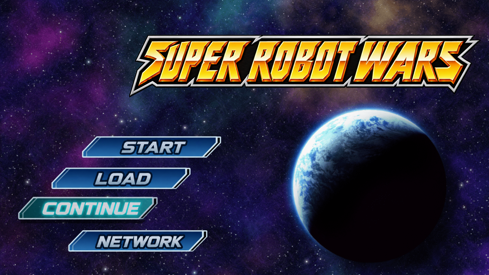
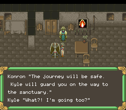

Shinseiki Odysselya
A forgotten past. A journey across ages. Discover VIC TOKAI’s 1993 RPG in English. Currently in playtesting and polish; no release date announced.
Independent fan projects
Some adventures deserve another chapter.
English translations, thoughtful ROM hacks, and a little reverse-engineering magic.


SHINSEIKI ODYSSELYA / SNES01 / The collection
Different worlds. One ongoing obsession.
A forgotten past. A journey across ages. Discover VIC TOKAI’s 1993 RPG in English. Currently in playtesting and polish; no release date announced.
The super robots, in English. Story, battle dialogue, menus, and artwork, with a PS3 preview and an early Vita port.
Take the adventure beyond Hoenn. A Pokémon Emerald project connecting Kanto, a second set of badges, and the Sevii Islands.
The main message archive has been extracted and drafted in English. A local test build inserts 41 translated lines from the opening.
A first English draft is complete for the extracted script. A local test displays English opening narration and selected street dialogue.
Work has begun on the sequel’s text engine. The first local preview displays the opening date caption in English using the first game’s font.
02 / More from the workbench
More Pokémon ROM hack repositories.
Each repository has its own scope and progress. Check its README for features, build instructions, and availability.
03 / Follow along
Follow the translations, try a test build, or help catch that one line that doesn’t quite fit.